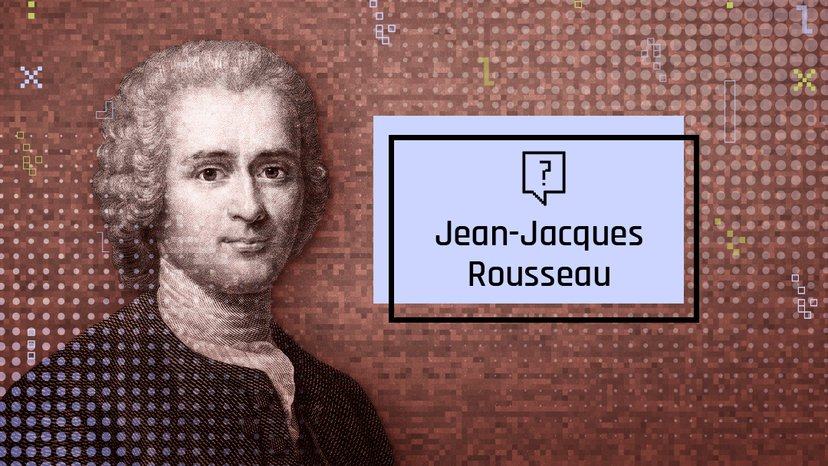

Rousseau : le philosophe


Rousseau fait découvrir à ses lecteurs des lieux, avec des descriptions qui ont une valeur informative. Mais il va beaucoup plus loin et « subjectivise » le paysage : il se considère comme un élément du paysage. Il y participe et s'y fond, dans un état proche de l'extase.